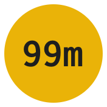
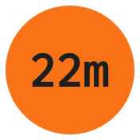

A dot in your menu bar that says whether your credentials are alive, and how long they have left.
macOS, Windows, Linux | MIT licensed | no account, no telemetry
And it never lets you mistake one for the other.


Red is always a fact. It appears only after a real
gcloud command has come back refusing the credential. A dropped
network never turns the dot red, because "I could not reach Google" is not
the same as "you are signed out", and a dot that cries wolf is a dot you
learn to ignore.
The countdown is always an estimate, and the app says so everywhere it shows one. Google does not publish your session deadline to your machine, so there is nothing to read. It has to be learned.
Every download includes the app and the gcloud-dot command.
Open the disk image and drag GCloud Dot to Applications. Signed with a Developer ID certificate and notarized by Apple, with the ticket stapled to both the app and the disk image, so it opens on the first double click even with no network.
brew install --cask nicglazkov/tap/gcloud-dotHomebrew may ask you to trust the tap once before it will load a cask from it:
brew tap nicglazkov/tap.
The installer writes only inside your user account and never asks for administrator rights. It is not code-signed yet, so SmartScreen shows "Windows protected your PC". Click More info, then Run anyway.
irm https://raw.githubusercontent.com/nicglazkov/gcloud-dot/main/install/install.ps1 | iexWindows 11 hides new tray icons behind the overflow arrow. Drag the dot out of it once and it stays on the taskbar.
curl -fsSL https://raw.githubusercontent.com/nicglazkov/gcloud-dot/main/install/install.sh | shOn a server with no desktop, add --no-gui to install
only the command.
yay -S gcloud-dotGNOME needs an extension. GNOME has shipped no system tray
since 3.26, so without
AppIndicator support
the dot has nowhere to appear. GCloud Dot detects this at startup and says so
rather than starting invisibly. Everything else, including
gcloud-dot status, works regardless.
Two mechanisms. The interface always says which one it is quoting.
Every ten minutes it runs gcloud auth print-access-token.
A token means the credential is alive. An invalid_grant or
a reauth error means it is gone. Anything else (a timeout, a captive
portal) is reported as unknown and leaves the previous verdict standing.
When a session is caught expiring, its length is recorded. After three such observations the countdown is the median of them. Before that it falls back to the gaps between your past logins, and says that it is doing so.
The moment a session ends is never observed exactly; it happens somewhere between the last check that succeeded and the first that failed. GCloud Dot records the midpoint of that interval rather than the failure, which halves the error instead of overstating every session by one full polling interval. As the predicted expiry approaches it also polls more often, so the measurement that trains the next estimate is the most accurate one it takes.
On the machine this was built against, eighteen observed sessions landed between 15.91h and 16.08h, converging, without being told, on Google's documented sixteen-hour default.
gcloud writes a log for every command it runs. GCloud Dot looks for
completed gcloud auth login invocations to find when your
current session began, and rescans once a minute, so signing in from any
terminal, on any tab, resets the countdown within a minute without you
telling the app anything.
Application default credentials expire on their own schedule.
The most confusing failure in local GCP development is the one where
gcloud works perfectly and your program does not. That is
almost always application default credentials, which are a separate
credential with a separate lifetime and no visible indicator anywhere.
GCloud Dot tracks them alongside your login and reports them separately, so
the answer takes a glance instead of half an hour.
It will also tell you when a service account key file has been sitting unrotated for months, reported honestly as the file's age, since a downloaded key carries no creation date to read.
The same engine, for prompts, scripts, and machines with no desktop.
$ gcloud-dot
🟢 signed in, about 14h 12m left (measured, n=18)
account nic@glazkov.com
project my-project
configuration default
last login Fri Aug 8, 06:31 (2h ago)
est. expiry Fri 22:33, 14h 12m left
session 16.1h (measured, n=18)Exit codes are part of the interface (0 signed in,
1 signed out, 2 unknown), so a shell prompt or a
CI step can branch on it without parsing anything.
--json gives a stable document including
estimate_is_measured, so anything consuming it can tell a
measurement from a guess.
Updating is one command as well, and it picks the right route for how you installed it.
$ gcloud-dot upgrade
Upgraded from 1.0.5 to 1.1.0.No, and this matters enough to be worth stating plainly. Refreshing an access token does not extend a reauth session: the session length is fixed when the session is created. That is precisely why it is safe to check every ten minutes without corrupting the very measurement being taken.
Because Google does not tell your machine when the session ends. The deadline is enforced server side and never handed to the client, so the only way to know the length is to watch one end. That is what GCloud Dot does, and it labels every number with how much evidence is behind it.
Nothing. There is no account, no telemetry, and no server. The only
network traffic is gcloud talking to Google exactly as it
already does, plus one request a day to GitHub's releases API to see whether
a newer version exists, which you can turn off.
The app runs gcloud auth login directly and gcloud opens your
browser, which is the whole of the visible flow. There is no terminal window
and no shell involved on any platform. If the sign in does not finish, the
app tells you why and points at the full output.
None. No Accessibility, no Screen Recording, no administrator rights on any platform. It reads gcloud's own configuration directory, runs the gcloud binary, and draws an icon.
Yes. When a new version is released you get a notification, and the
window offers one button that installs it and restarts the app. There is a
single command for the same thing, gcloud-dot upgrade.
With one deliberate exception: if a package manager installed GCloud Dot, that manager owns the files. Homebrew and winget need no password, so the app runs them for you. apt and pacman need root, so the app changes nothing and shows you the command instead. Writing over files a package manager owns would leave it describing a version that is no longer on disk.
Every download is checked against the release's published checksum, and on macOS the new app's Developer ID signature is verified and passed to Gatekeeper before it is allowed to replace the old one.
It is replaced cleanly. GCloud Dot keeps the same identity as the shell-installed macOS app and the PowerShell tray that came before it, so your measured session lengths carry across and the old login item is retired on first launch. Nothing is deleted; the old app bundle stays where it is until you remove it.